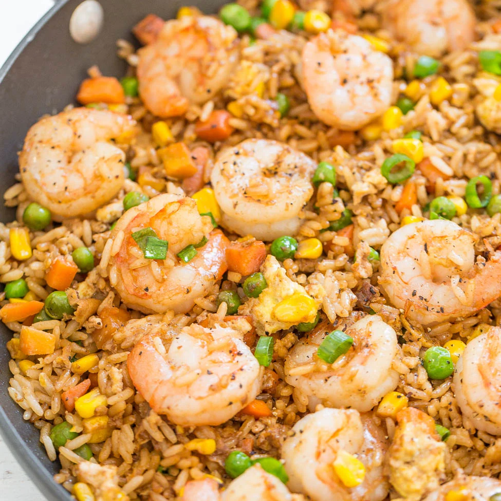

Shrimp Fried Rice Recipe

Description
Quick and Easy Shrimp Fried Rice
Ingredients
- 8 oz raw devained shrimp
- 3 tablespoons of Canola Oil
- 3 Eggs
- Green Onions
- 4 Cups leftover rice
- 3/4 cup frozen peas and carrots, defrosted
- 1 tablespoon soy sauce
- 1 teaspoon sesame oil
Steps
- In a medium bowl, sprinkle the shrimp with salt, pepper, and cornstarch, and toss to coat. Set aside to sit for ten minutes at room temperature.
- Heat a large sauté pan or wok (a seasoned cast iron pan or hard anodized aluminum works well, they're relatively stick free and can take the heat) on high heat.
When the pan is very hot (a drop of water instantly sizzles when it hits the pan), swirl in one tablespoon of the cooking oil to coat the pan.
- Add the shrimp to the hot pan, spreading them out quickly in a single layer. Let them fry in the pan without moving them, for 30 seconds.
- Return the pan to the burner and lower the heat to medium. Add a little more oil if the pan needs it. Add the beaten eggs and stir them quickly to scramble them while they cook.
- Clean out the pan or wok with paper towels and return it to the burner. Heat the pan on high and when it is hot, swirl in the remaining tablespoon or two of oil. When the oil is shimmering hot (almost smoking), add the green onions and sauté for 15 seconds.
- Then add the leftover cooked rice to the pan and stir with the green onions to mix well.
Spread the rice onion mixture over the surface of the pan and let it fry, without moving it. You should hear the rice sizzle. Cook for about 1 to 2 minutes.
- Sprinkle soy sauce on the rice and stir to combine.
Add the carrots, peas, shrimp, eggs, and sesame oil, stirring to combine well.
- Heat everything until sizzling hot. Add more soy sauce to taste.